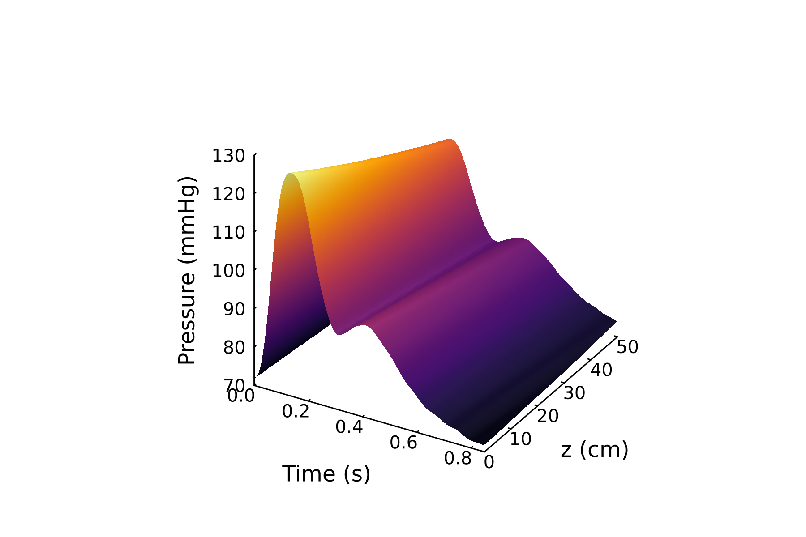

Research
Current work
My research centers on efficient computational models for complex parametric systems, sparse measure approximation, and mathematical models of arterial fluid dynamics.

Model reduction · Julia
Parametric Model Order Reduction
I develop efficient reduced-order methods for parametric systems, including greedy algorithms, proper orthogonal decomposition, and balanced truncation.
PreprintJulia packageDocumentation
With Akil Narayan and Yanlai Chen.

Scientific computing · Algorithms
Carathéodory Pruning
I design fast, robust QR-type algorithms that replace a positive discrete measure with a sparse representation while preserving target moments.
PreprintJulia packageDocumentation
With Akil Narayan and Jesse Chan.

Arterial blood flow · Uncertainty quantification
Blood Flow, Conductivity, and Uncertainty
I model arterial flow, wall motion, and red blood cell behavior to study how blood pressure influences electrical measurements at the wrist. Sensitivity analysis identifies the parameters that drive model predictions.
PublicationPreprint
With Christel Hohenegger, Henry Crandall, Benjamin Sanchez, Tyler Schuessler, and Braxton Osting.
Earlier work
- Closed Vortices as Self-Avoiding PolygonsUndergraduate honors project · Markov chain Monte CarloPresentation
- Carbon Sequestration in Forests2022 MCM/ICM · Age-structured modelingSubmission
- Port-and-Sweep Solitaire Army ProblemDiscrete mathematics · Linear algebraBackground
- Health-Related Habits on TwitterMachine learning · Social networks
Scholarship
Selected publications and preprints
Constructive Tchakaloff results and well-conditioned quadrature through randomized least squares
F. Bělík, Akil Narayan, and John Turnage, 2026.
arXiv
Cuffless hemodynamic monitoring with physics-informed machine learning models
H. Crandall, T. Schuessler, F. Bělík, et al. Nature Communications, 2026.
JournalarXiv
Greedy Rational Approximation for Frequency-Domain Model Reduction of Parametric LTI Systems
F. Bělík, Y. Chen, and A. Narayan, 2025.
arXiv
Efficient and Robust Carathéodory-Steinitz Pruning of Positive Discrete Measures
F. Bělík, J. Chan, and A. Narayan, 2025.
arXiv
View all work on Google Scholar →
Teaching
Courses and experience
Below are classes I have taught or assisted with.
MATH 1320
Engineering Calculus II
Instructor of Record · University of Utah · Spring 2026
MATH 1310
Engineering Calculus I
Instructor of Record · University of Utah · Spring 2025
MATH 6710
Applied Linear Operators and Spectral Methods
Teaching Assistant · University of Utah · Fall 2025
MATH 6610
Numerical Analysis I
Teaching Assistant · University of Utah · Spring 2024
MATH 4600
Mathematics in Medicine
Lab Instructor · University of Utah · Spring 2023
Mathematics and Computer Science
Tutor, grader, and teaching assistant · Gustavus Adolphus College · 2019–2022
Resources
Course notes and reviews
Notes prepared during my graduate studies and shared as informal learning resources.
Beyond mathematics
Other interests
Outside my studies, I enjoy running, hiking, tennis, biking, snowboarding, music, and board games. I also enjoy coding projects, particularly in Julia.
Play SnakeWordle helper